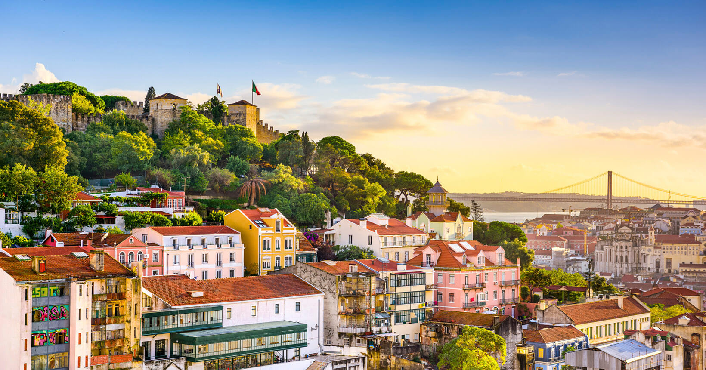

Acapulco
Acapulco, localizada na costa do Pacífico mexicano, é um destino de sonho que combina praias deslumbrantes, vida noturna vibrante e uma rica história cultural. Ao chegar em Acapulco, os visitantes são recebidos por um cenário paradisíaco de areia dourada e águas cristalinas, ideal para relaxar e se reconectar com a natureza. A Playa Condesa é um dos pontos mais famosos, perfeita para banhos de sol e esportes aquáticos, enquanto a Playa Revolcadero oferece ondas para os amantes do surfe. A cidade é também conhecida por seus históricos cliff divers em La Quebrada, onde corajosos mergulhadores saltam de penhascos de 35 metros de altura, uma tradição emocionante que começou nos anos 30. Para quem busca imersão cultural, uma visita ao Forte de San Diego é essencial. Este forte do século XVII, transformado em museu, revela a rica história marítima da região e a época dos piratas. À noite, Acapulco ganha vida com uma oferta impressionante de restaurantes, bares e discotecas. A avenida Costera Miguel Alemán, que percorre a baía, é o coração da vida noturna da cidade. Aqui, turistas podem desfrutar de refeições gourmet com vistas panorâmicas, antes de dançar até o amanhecer em clubes famosos como o Palladium. Para uma experiência mais tranquila, o Jardim Botânico de Acapulco oferece uma fuga serena, com trilhas que serpenteiam por uma vegetação exuberante e vistas deslumbrantes da baía. Além disso, a Laguna de Tres Palos, com seus manguezais e aves exóticas, é um passeio obrigatório para os amantes da natureza. O mercado municipal de Acapulco é outro ponto alto, onde se pode encontrar artesanatos locais, lembranças e a deliciosa gastronomia mexicana, desde tacos autênticos até mariscos frescos. Acapulco é um destino que oferece algo para todos os gostos, combinando aventura, cultura e relaxamento. Se você está em busca de emoções fortes, momentos culturais ou simplesmente descansar em uma praia paradisíaca, Acapulco promete uma viagem inesquecível.
Paris

Paris, a Cidade das Luzes, é um destino que encanta viajantes de todo o mundo com sua combinação única de história, arte, gastronomia e romance. Ao desembarcar na capital francesa, é impossível não se maravilhar com a majestosa Torre Eiffel, um ícone global que oferece vistas panorâmicas inesquecíveis da cidade. Um passeio pelos Champs-Élysées leva você ao Arco do Triunfo, outro monumento imponente que celebra as vitórias de Napoleão Bonaparte. O Louvre, o maior museu de arte do mundo, abriga obras-primas como a Mona Lisa e a Vênus de Milo. Perder-se em suas galerias é uma experiência enriquecedora que revela séculos de arte e cultura. Não muito longe, o Musée d'Orsay, instalado em uma antiga estação ferroviária, é um tesouro de arte impressionista, com obras de Monet, Van Gogh e Degas. Passear pelo charmoso bairro de Montmartre é como voltar no tempo. Suas ruas de paralelepípedos, a Basílica de Sacré-Cœur e os cafés boêmios inspiraram artistas como Picasso e Toulouse-Lautrec. Aqui, é possível assistir a pintores de rua em ação e, quem sabe, adquirir uma obra de arte única. Paris também é famosa por sua gastronomia. Desde os bistrôs tradicionais até os restaurantes estrelados pelo Michelin, a cidade é um paraíso para os amantes da boa comida. Não deixe de provar um croissant fresco, queijos variados e vinhos finos. Visitar o mercado de rua de Rue Mouffetard é uma oportunidade de saborear produtos locais e sentir o pulso da vida parisiense. O Rio Sena é outro ponto central de Paris. Um cruzeiro ao entardecer oferece uma perspectiva mágica dos monumentos iluminados, passando por pontos como a Catedral de Notre-Dame e a Pont Neuf. As margens do Sena, declaradas Patrimônio Mundial pela UNESCO, são perfeitas para um passeio romântico ou um piquenique. Para os apaixonados por moda, Paris é um destino de sonho. A Rue du Faubourg Saint-Honoré e a Avenue Montaigne abrigam boutiques de marcas de luxo como Chanel, Dior e Louis Vuitton. Paris não seria completa sem mencionar seus belos jardins, como o Jardim de Luxemburgo e o Jardim das Tulherias, que oferecem refúgios tranquilos no meio da agitação urbana. Em cada esquina, Paris revela um pedaço de sua alma multifacetada, tornando cada visita única e memorável. É uma cidade que seduz e encanta, prometendo uma experiência inesquecível para todos que a visitam.
Portugal
Portugal, um país repleto de história, cultura e paisagens deslumbrantes, é um destino que encanta a todos os visitantes. Ao desembarcar em Lisboa, a capital, os viajantes são recebidos por ruas de paralelepípedos, casas coloridas e os tradicionais bondinhos que sobem e descem as colinas da cidade. O bairro de Alfama, com seu labirinto de ruas estreitas e casas antigas, oferece uma autêntica experiência portuguesa. Aqui, o som do fado, a música melancólica do país, ecoa pelas ruas à noite. A Torre de Belém e o Mosteiro dos Jerónimos, ambos Patrimônios Mundiais da UNESCO, são paradas obrigatórias. Estes monumentos são testemunhos da era dos Descobrimentos, quando os navegadores portugueses exploraram novos mundos. A poucos minutos de Lisboa, a vila de Sintra encanta com seus palácios de conto de fadas, incluindo o colorido Palácio da Pena e o misterioso Castelo dos Mouros. O Porto, no norte do país, é conhecido por seu vinho famoso. Um passeio pelas caves de vinho do Porto, nas margens do rio Douro, oferece degustações que celebram esta rica tradição. O centro histórico da cidade, com suas igrejas barrocas e ruelas medievais, é um convite a explorar. A região do Alentejo, com suas planícies douradas e vilarejos pitorescos, proporciona uma experiência mais tranquila. A cidade de Évora, também Patrimônio Mundial da UNESCO, abriga um impressionante templo romano e uma catedral gótica imponente. Para os amantes da natureza, a região do Algarve, no sul, é um paraíso de praias de areia dourada e falésias dramáticas. Cidades como Lagos e Albufeira oferecem águas cristalinas, ideais para mergulho e snorkel. A gastronomia portuguesa é outra atração imperdível. Desde o bacalhau, preparado de centenas de maneiras, até os doces pastéis de nata, cada refeição é uma celebração de sabores autênticos. Os mercados locais, como o Mercado da Ribeira em Lisboa, são ótimos lugares para experimentar produtos frescos e pratos tradicionais. Portugal é um país que combina a modernidade com uma rica herança histórica, oferecendo experiências variadas que vão desde a descoberta cultural até o relaxamento nas suas belas praias. Uma viagem a Portugal promete memórias inesquecíveis e uma profunda conexão com este encantador país.